Contents
- Desarrollo ejercicio 1
- Ejercicio 1.a. La solución analítica mediante transformada de laplace, puede ayudarse de programas previos
- Ejercicio 1.b. La gráfica de la solución analítica, puede presentar diferentes intervalos en la grafica y acercamientos a la gráfica según considere necesario.
- Ejercicio 1.c. El diagrama de la para Simulink, indicando en caso de que no sea claro, el valor de cada parámetro en Simulink, por ejemplo, reportar las condiciones Iniciales de simulación ya que no son visibles a simple vista desde el esquema inplementado.
- Ejercicio 1.d. La grafica de la solución en Simulink, puede presentar diferentes intervalos en la grafica y acercamientos a la gráfica según considere necesario.
- Ejercicio 1.e. La gráfica, en la misma figura, de la Simulación y la solución analítica.
- 1.1.a. La solución analítica mediante transformada de laplace, puede ayudarse de programas previos
- 1.1.b. La gráfica de la solución analítica, puede presentar diferentes intervalos en la grafica y acercamientos a la gráfica según considere necesario.
- 1.1.c. El diagrama de la para Simulink, indicando en caso de que no sea claro, el valor de cada parámetro en Simulink, por ejemplo, reportar las condiciones Iniciales de simulación ya que no son visibles a simple vista desde el esquema inplementado.
- 1.1.d. La grafica de la solución en Simulink, puede presentar diferentes intervalos en la grafica y acercamientos a la gráfica según considere necesario.
- 1.1.e. La gráfica, en la misma figura, de la Simulación y la solución analítica.
- Ejercicio 3. Accurate Zero-Crossing Detection
% %%
Objetivos
- Conocer Simulink
- Implementar simulaciones de ecuaciones diferenciales en Simulink
Desarrollo ejercicio 1
Ejercicio 1.a. La solución analítica mediante transformada de laplace, puede ayudarse de programas previos
Para el este problema utilizo un programa que previamente fue realizado en una práctica(anexo código al final).
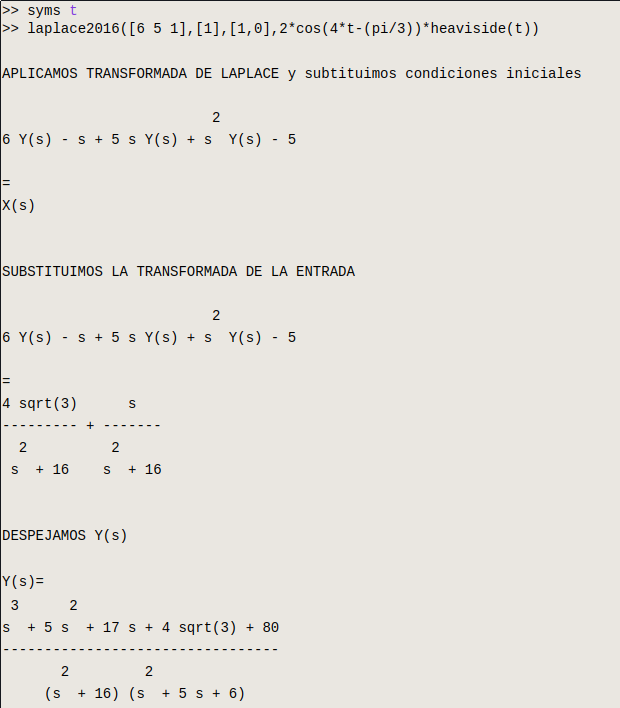
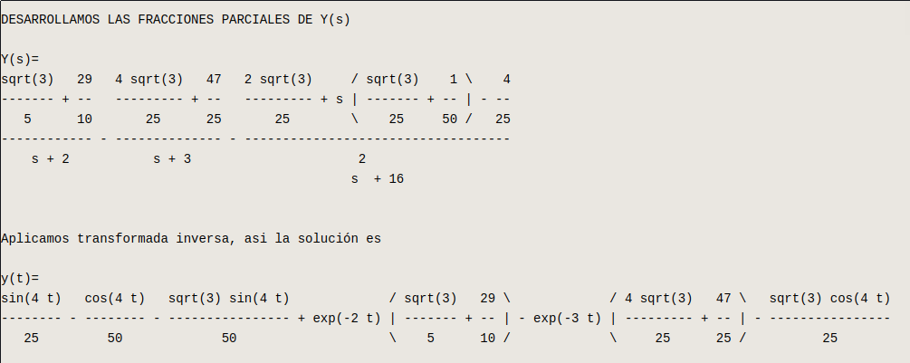
Ejercicio 1.b. La gráfica de la solución analítica, puede presentar diferentes intervalos en la grafica y acercamientos a la gráfica según considere necesario.
El acercamiento que propongo se me hace el correcto por el hecho de que un poco despues del dos se repite la misma gráfica.
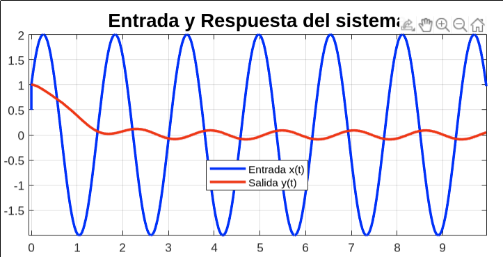
Ejercicio 1.c. El diagrama de la para Simulink, indicando en caso de que no sea claro, el valor de cada parámetro en Simulink, por ejemplo, reportar las condiciones Iniciales de simulación ya que no son visibles a simple vista desde el esquema inplementado.
A continuación expongo el diagrama con el cual se realiza la simulación en Simulink.
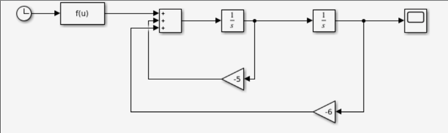
Para esta simulación colocamos los dos integradores, los cuales tienen las siguientes condiciones iniciales:
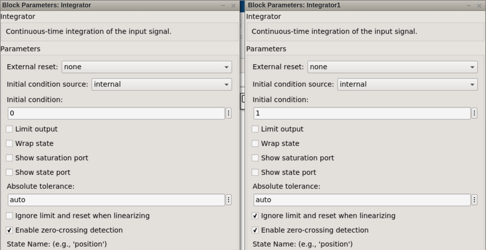
También, como se ve en imágenes pasadas, tenemos una función que es nuestra entrada. Esta es una función con 'u' como variable y que se muestra en la siguiente figura:
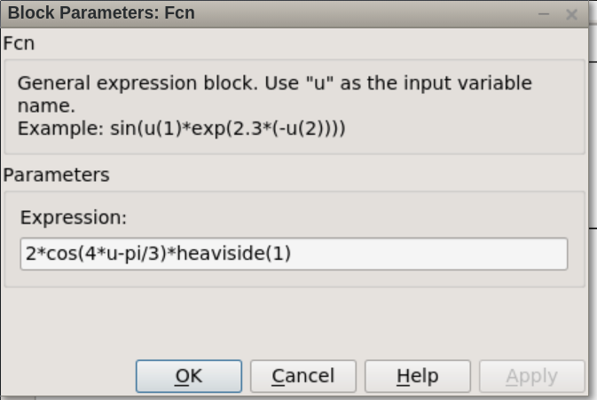
Ejercicio 1.d. La grafica de la solución en Simulink, puede presentar diferentes intervalos en la grafica y acercamientos a la gráfica según considere necesario.
En este punto, una vez construido el diagrama en Simulink, podemos ver una gráfica que se aprecia en la siguiente imágen:
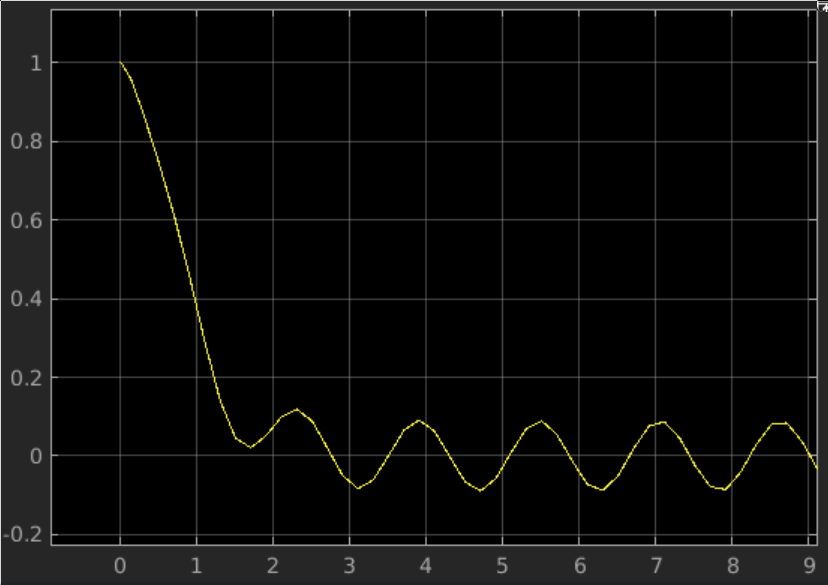
Ejercicio 1.e. La gráfica, en la misma figura, de la Simulación y la solución analítica.
En este punto sólo queda ver la comparación de ambas gráficas, ya que, en caso de haber hecho bien la simulación, las dos gráficas se observan casi iguales. En este caso, si se logró que se vieran encimadas las gráficas. Primero observamos que tenemos una nueva salida, en el bloque de entrada se coloca la respuesta analítica.
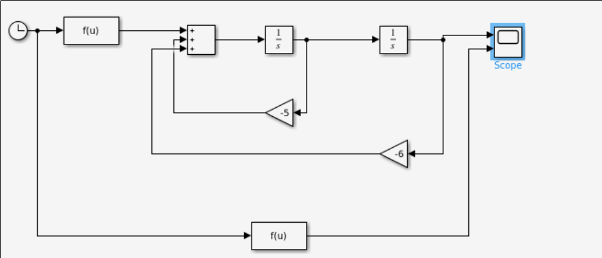
Esta es la entrada de la respuesta analítica que previamente se sacó, que se ve diferente debido al formato que se debe colocar en Simulink.

Ahora veamos la salida que sale a la hora de simular:
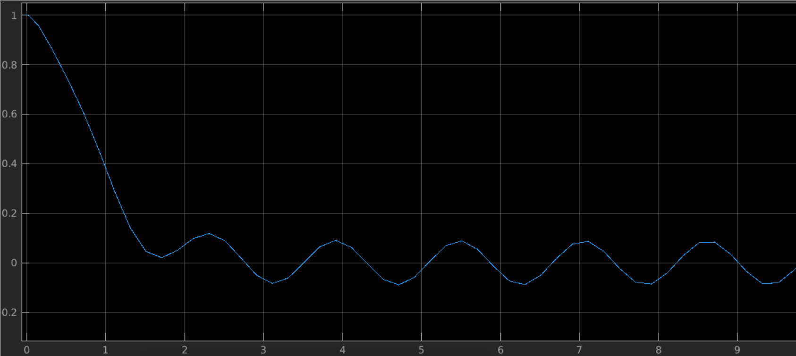
Nuevamente se menciona que quizás parezca que sólo hay una sola saida, pero si se hace el zoom suficiente se pueden apreciar ambas, la analítica y la numérica.
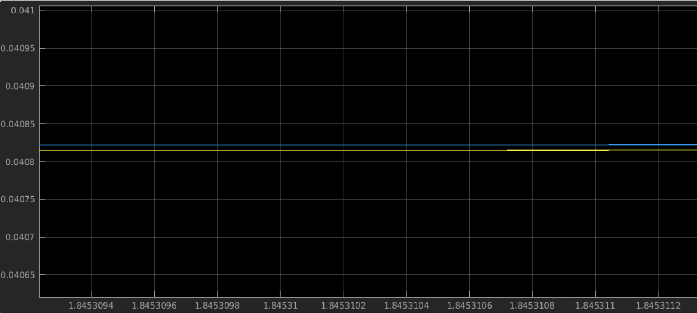
1.1.a. La solución analítica mediante transformada de laplace, puede ayudarse de programas previos
Nuevamente para este sistema se vuelve a utilizar un código previamente visto en prácticas anteriores con el cual se obtiene la respuesta analítica y la gráfica donde se encuentra la entrada y la salida.
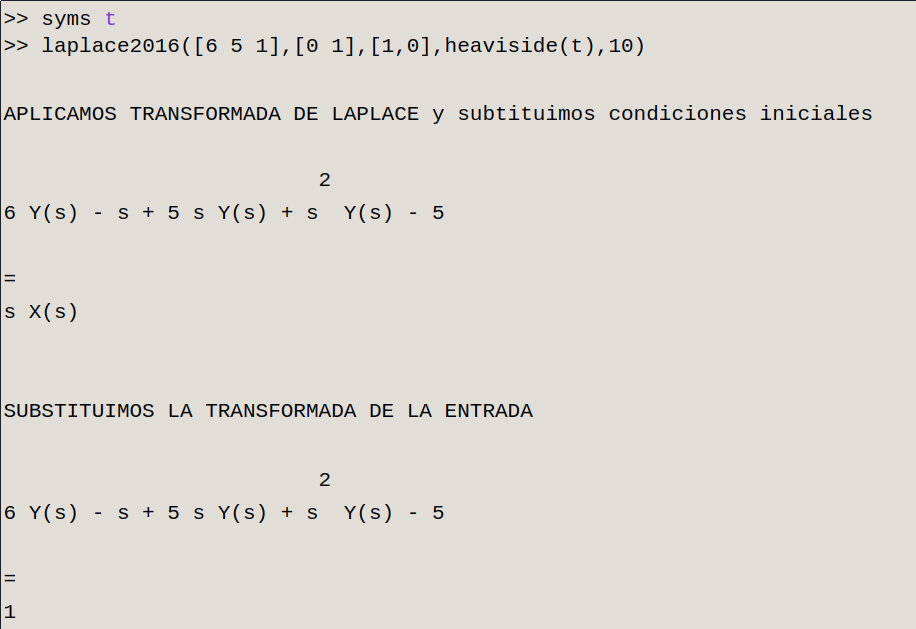
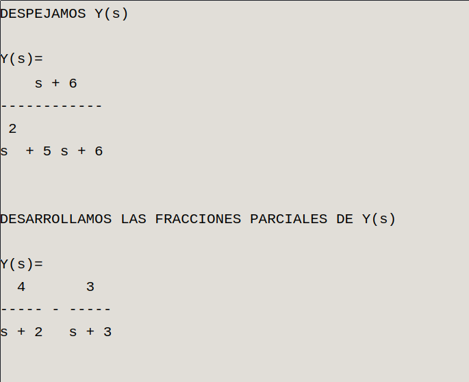
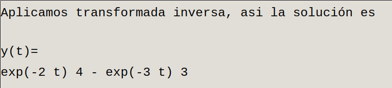
1.1.b. La gráfica de la solución analítica, puede presentar diferentes intervalos en la grafica y acercamientos a la gráfica según considere necesario.
Del proceso anterior obtenemos la siguiente grafica:
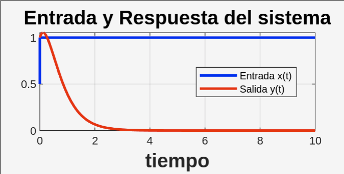
Vemos que son los exponenciales negativos los que hacen que mientras el tiempo aumente, éste tiende a cero.
1.1.c. El diagrama de la para Simulink, indicando en caso de que no sea claro, el valor de cada parámetro en Simulink, por ejemplo, reportar las condiciones Iniciales de simulación ya que no son visibles a simple vista desde el esquema inplementado.
El diagrama que representa este sistema es el siguiente:
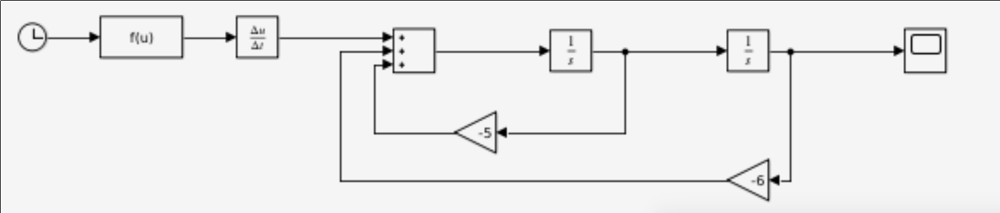
Como el programa a simple vista no permite mostrar las condiciones iniciales y la función de entrada, se muestran a continucación.
Primera la función de entrada que posteriormente se le realiza una derivada.
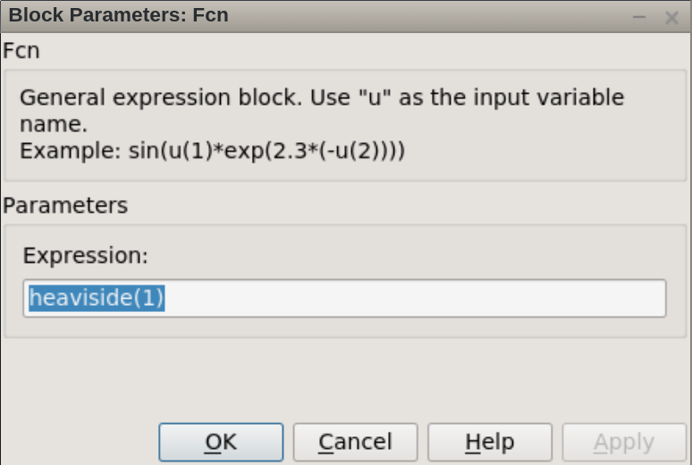
Ahora observamos que para éste sistema encontramos que las condiciones despues de cero o 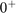 son uno.
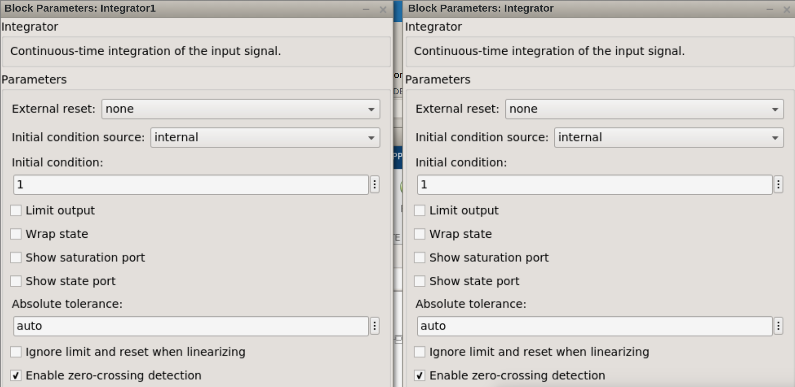
1.1.d. La grafica de la solución en Simulink, puede presentar diferentes intervalos en la grafica y acercamientos a la gráfica según considere necesario.
Ahora se corre la simulación del diagrama que realizamos y observamos que nos arroja la gráfica de la salida de nuestro sistema:
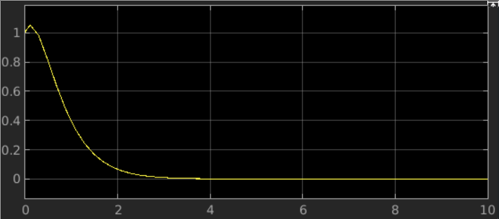
1.1.e. La gráfica, en la misma figura, de la Simulación y la solución analítica.
El objetivo en este punto es que la gráfica pasada que fue obtenida numericamente y la grafica que se sacó analíticamente tienen que asemejarse mucho, al punto de parecer iguales. Esta comparativa se realiza agregando una nueva entrada que es la respuesta analítica y, por lo tanto, obtenemos una segunda salida.
Aquí tenemos como se ve el diagrama con la entrada que se mencionó.
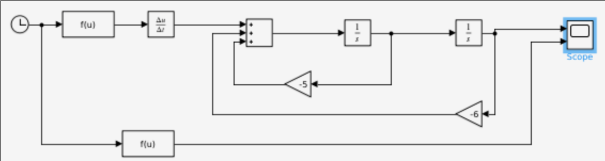
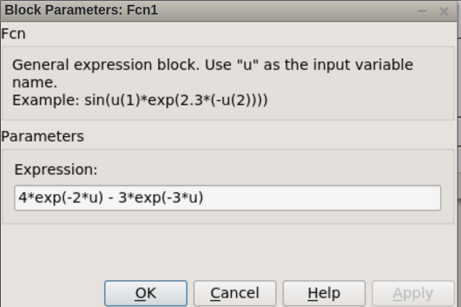
una vez visto el diagrama que se necesita recrear, se muestran las dos salidas.
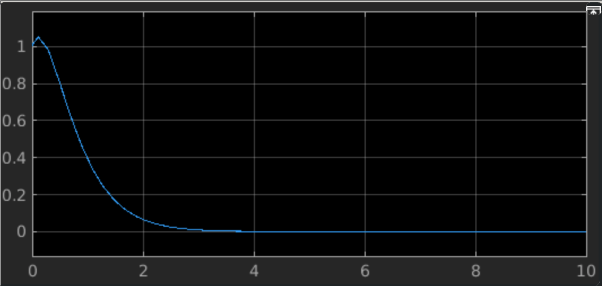
Nuevamente se logra que se parezcan mucho, eso quiere decir que el proceso está bien hecho. Podemos verificar que acercandonos lo suficiente podemos observar que si son dos salidas.
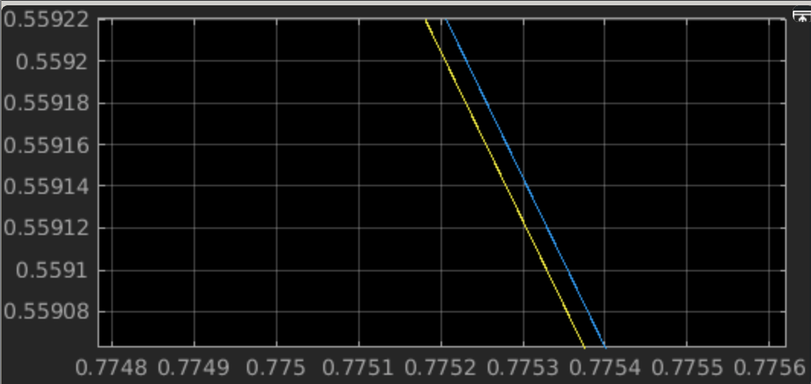
Ejercicio 3. Accurate Zero-Crossing Detection
La aplicación elegida comienza con una entrada que es una onda senosoidal la ccual se suministra en trees pares; La primera pasa directo en una operación simultarea con una segunda señal que pasa por un proceso. El segundo destino de la onda senosoidal de entrada es un bloque de valor absoluto, eso quiere decir que solo vamos a contar con los ciclos positivos de la entrada. Por ultimo la señal enntra a un bloque de saturacion que reduce la señal a un limite intefior y superior de -+.6.
La Salida del valor absoluto y el bloque de saturacion van al mismo tiempo a un bloque de conmutación, este bloque esta por defecto dejando pasar únicamente a la señal con valor absoluto pero tiene un pulso que uando se activa deja a la señal que tenia y ahora deja pasar únicamente a la salida del bloque de saturación. El pulso se activa cuando una condicioñ se cumple, en este caso, eso pasa cuando el tiempo supera los 5 segundos, despues de eso se reinicia el conteo.
Cada momento el bloque de conmutaicón proporciona una de las dos salidas en paralelo con la señal senosoidal que no sufrio cambios, esto con el fin de que se aprecie en la salida las transformación a lo largo de un ciclo que se cumple a los 10 segundos.
Se puede ver que pasando el segundo 5 la señal hace un cambio inmediato a la señal saturada. El ciclo se volvera a repetir despues de eso.
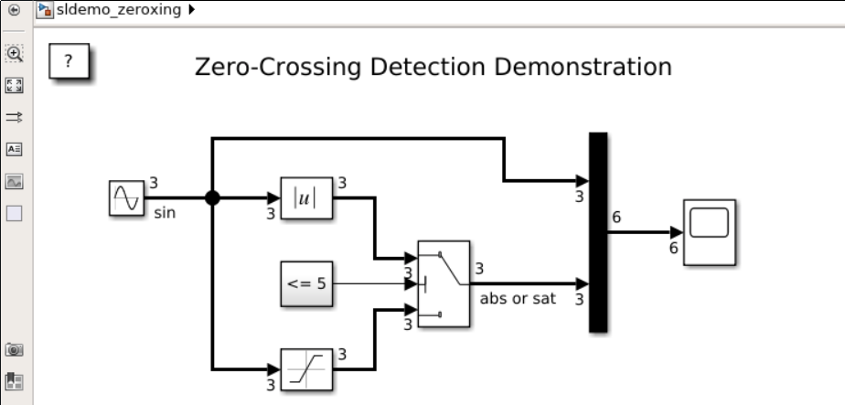
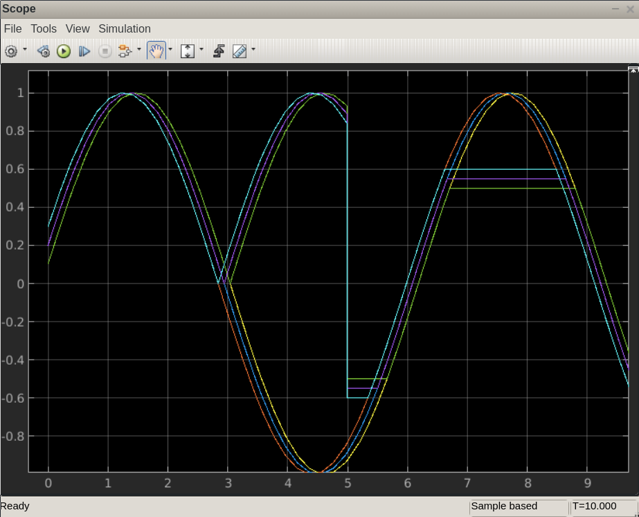